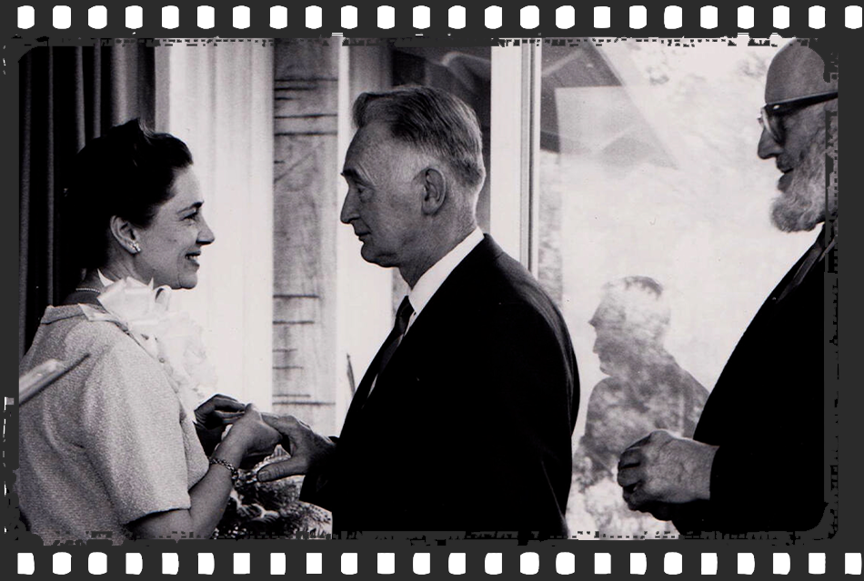
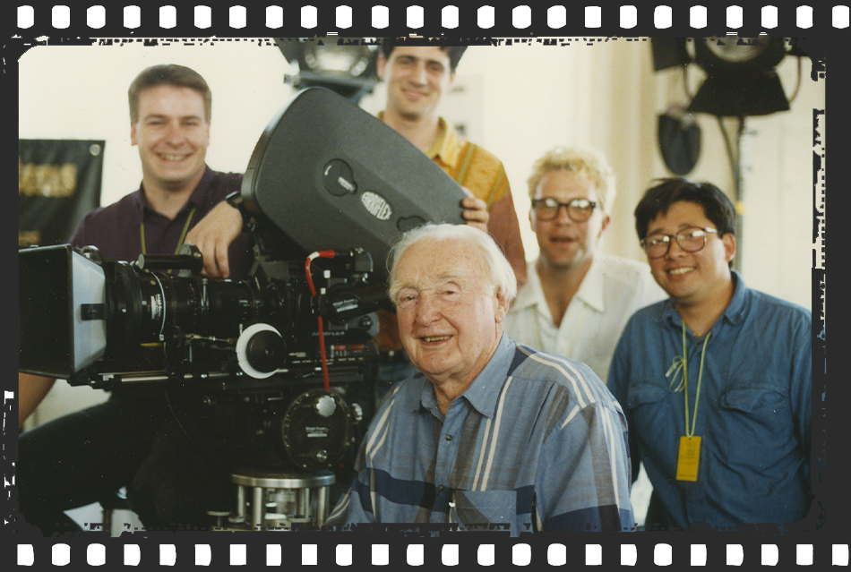
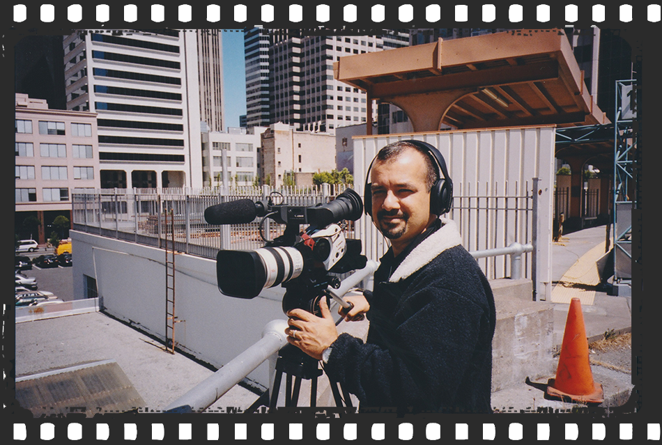
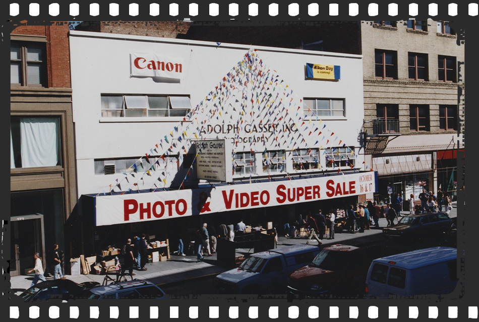
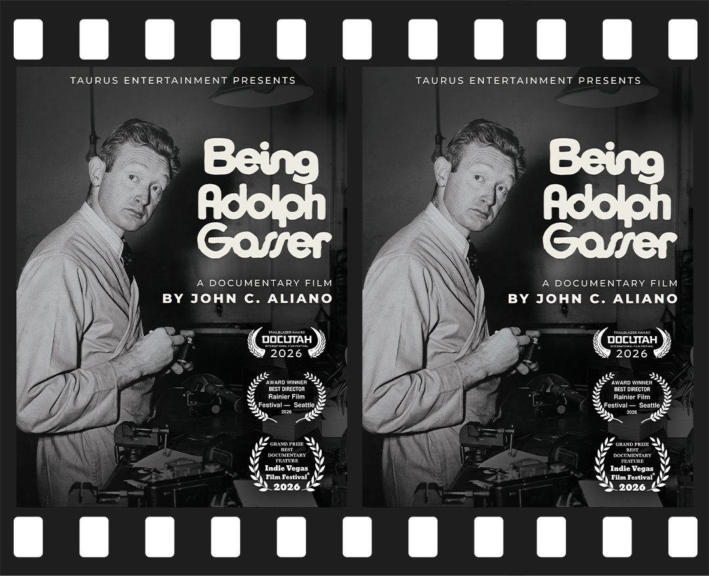
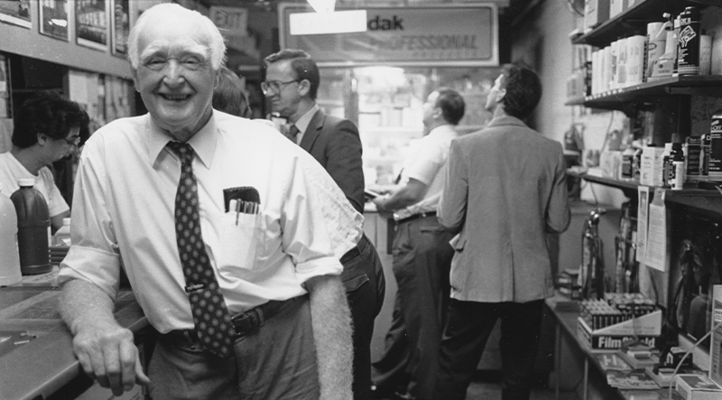
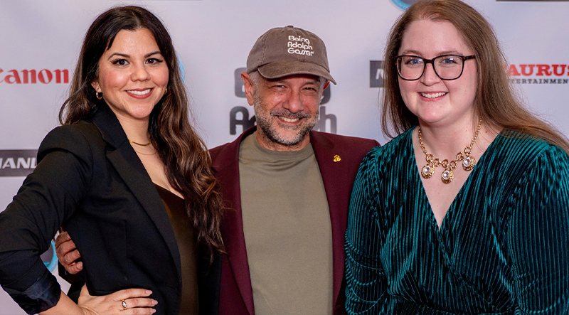

Nearing the end of his life, Adolph Gasser looks back on a seventy-year career as a world-class camera repairman, WWII veteran, inventor, and best friend of nature photographer Ansel Adams, contributing developer of the first Nikon camera and a sales/rental/camera repair store owner who empowered other prominent Bay Area visual artists and inventors to succeed. As eminent domain, the internet and changing technologies threaten everything he has built, he struggles to find a way to keep moving forward. Inspired by his unique stories and abilities, filmmaker and professor John C. Aliano follows him over the course of several years and reflects on his own career trajectory. Ultimately, he learns the greatest accomplishment of the film's namesake is Being Adolph Gasser.


Get to know the passionate team behind the making of "Being Adolph Gasser". Our small but dedicated team brings together a wealth of experience, creativity, and a deep commitment to capturing the essence of Adolph Gasser's legacy.
Learn More →